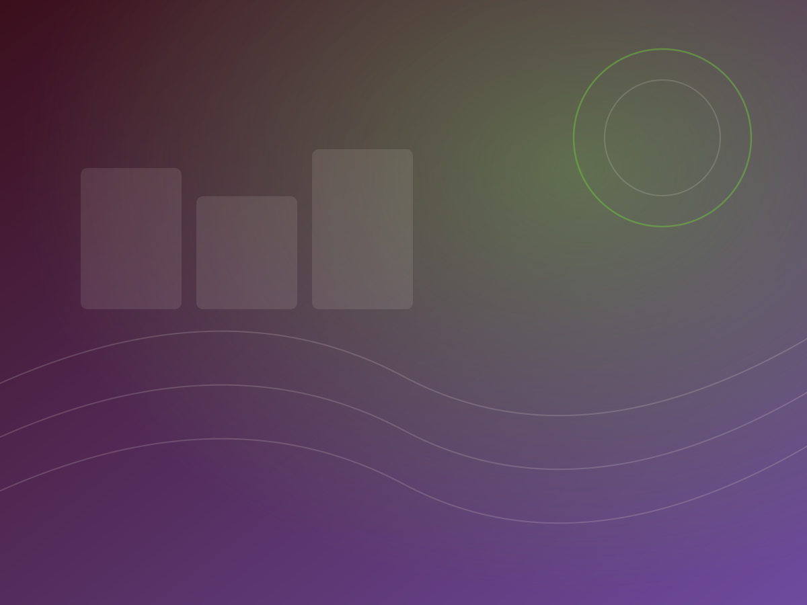
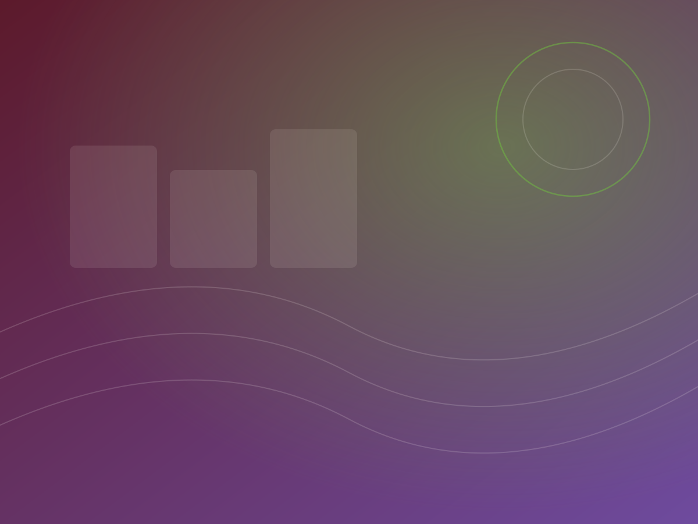

Step 01
Consultation
Scope, audience, curriculum requirements, languages and budget mapped before anything is quoted.

Six services across three disciplines — editorial, creative and production — available individually or as a single end-to-end engagement.
Structure, argument, accuracy and readability.
The final gate before anything goes to print.
English and French, localised not transposed.
Covers, interiors, typesetting and layout.
Original artwork, diagrams and visual explanation.
Production, finishing and delivery at volume.
We work at two levels. Structural editing addresses whether the material does its job — sequence, coverage, pitch and curriculum fit. Line editing then tightens the prose itself for clarity and register.
For educational titles this includes checking that the level of language matches the intended year group.
Discuss an editing briefThe last check before print: grammar, spelling, punctuation, consistency of style and terminology, running heads, captions, cross-references, and typographic detail such as bad breaks and widows.
Handled as a distinct stage by someone who did not do the editing — a second pair of eyes, by design.
Discuss a proofreading brief
English to French and French to English, by translators working in the Cameroonian education context. We localise: examples, names, places, currency, measurement and classroom register are all adapted so the target edition reads as though it were written in that language.
Both editions are scheduled together, so neither becomes the version that ships late.
Discuss a translation briefCover design, interior layout, typesetting and grid systems built for the way the material is actually used — a textbook read at a desk has different demands from a report read on screen.
Delivered as print-ready files, with the layout held consistent across both language editions.
Discuss a design brief
Original artwork, character work, maps, diagrams and technical illustration — commissioned rather than licensed from a stock library, so the imagery belongs to the title.
Cultural relevance is treated as an editorial requirement: learners should recognise the people, places and situations they are looking at.
Discuss an illustration briefPrint production, binding and finishing at the volumes an institutional rollout requires, with stock specification and proofing agreed before the run.
Because production sits in the same house as editorial, print problems get caught while they are still fixable.
Discuss a print runNothing moves to the next stage until the current one is signed off. It is slower to promise and faster to deliver.
Scope, audience, curriculum requirements, languages and budget mapped before anything is quoted.
Schedule, milestones and team allocation agreed in writing, with both language tracks planned in parallel.
Editorial, design and illustration run against the agreed brief, with progress visible at each milestone.
Proofreading, factual verification and curriculum alignment. This stage can and does block a release.
Print, finishing and distribution to the schedule set at planning — plus files archived for future editions.
Whether it is a raw manuscript or a print-ready file that needs a second opinion, start with a consultation.